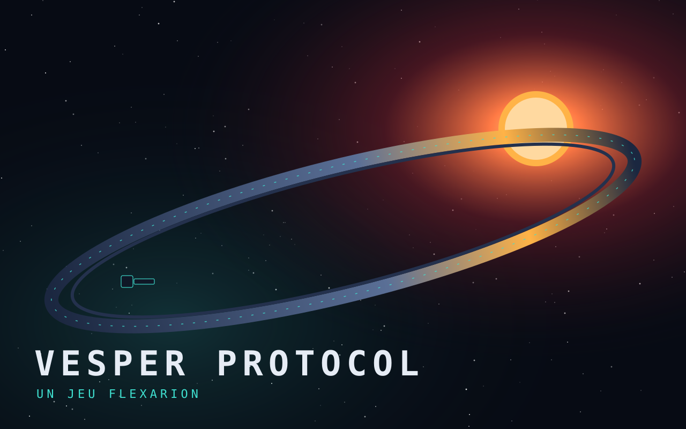
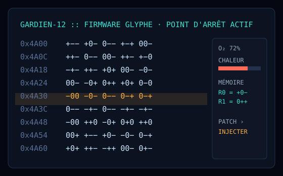
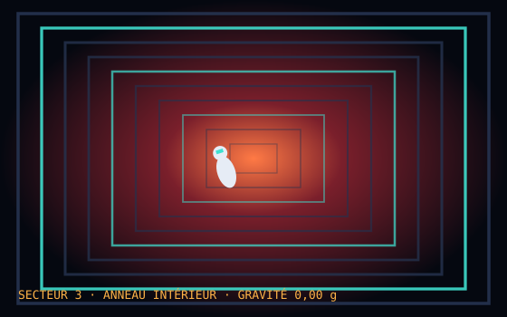

Le jeu phare de Flexarion
Vesper Protocol : explorez et piratez une mégastructure alien
Vesper Protocol est un jeu d'exploration spatiale et de hacking développé par le studio Flexarion. Dérivez dans une structure alien de quatre cents kilomètres, lisez son code, et décidez de ce qu'il faut réparer — ou laisser mourir.

L'univers de Vesper Protocol
Année 2231. Les sondes humaines ont atteint Tau-Héliade, une naine rouge instable située à onze années-lumière de la Terre. Autour d'elle tourne la Vesper : un anneau construit par une civilisation disparue, couvert de radiateurs et de circuits de la taille de villes. La structure fonctionne encore. Ses automates, que l'équipage appelle les Gardiens, entretiennent des systèmes dont personne ne comprend le but.
Vous êtes Ilya Sorel, auditrice de systèmes critiques à bord de la station de relais Ancre-7. Quand l'étoile commence à s'effondrer, la Vesper se met à émettre un signal : un appel au secours, un avertissement, ou une procédure d'autodestruction. Vous avez quelques cycles orbitaux pour le découvrir.
Lieux, personnages et machines sont détaillés dans le codex de l'univers : la Vesper, Ancre-7, Ilya Sorel, les Gardiens, la logique ternaire et Tau-Héliade.
Les mécaniques de jeu
1. Exploration en apesanteur
Déplacez-vous par poussées et points d'ancrage dans des salles sans haut ni bas. Votre combinaison gère deux ressources : l'oxygène et la chaleur. Pirater un système produit de la chaleur ; rester trop près d'un radiateur alien aussi. Chaque sortie est un calcul.
2. Le hacking par rétro-ingénierie
Chaque porte, ascenseur ou Gardien exécute un programme écrit en glyphes. Branchez votre console, posez des points d'arrêt, observez la mémoire, puis injectez un patch. Pas de mini-jeu de réflexe : vous gagnez en comprenant ce que fait le code.
3. Une logique ternaire alien
Les aliens ne comptaient pas en binaire. Leur logique utilise trois états — négatif, neutre, positif. Les premiers puzzles vous apprennent ces règles pas à pas, les derniers vous demandent d'écrire vos propres routines. Notre tutoriel sur la logique ternaire en explique les bases.
4. Des Gardiens qui apprennent
Réutilisez trop souvent la même faille et les Gardiens la corrigent. Ils mémorisent vos méthodes et déploient des contre-mesures, ce qui vous oblige à varier vos approches. Nous racontons leur conception dans le devlog consacré à l'IA des Gardiens.
5. Réparer ou piller
Chaque système piraté peut être restauré ou dépouillé de ses ressources. Vos choix modifient l'état de la Vesper, le comportement des Gardiens et l'une des quatre fins du jeu.


Fiche technique
| Développeur | Flexarion (Aix-en-Provence, France) |
|---|---|
| Genre | Exploration, puzzle, hacking — hard science-fiction |
| Plateforme | PC (Windows, Linux) |
| Modèle économique | Jeu premium, démo gratuite, accès anticipé prévu en 2027 |
| Durée de vie visée | 10 à 14 heures, 4 fins |
| Langues | Français, anglais |
| Page itch.io | Vesper Protocol sur itch.io |
Envie de voir les coulisses ? Le devlog Flexarion détaille notre façon de travailler, de la conception de l'IA des Gardiens à l'optimisation du shader de nébuleuse, et la page le studio présente l'équipe derrière Vesper Protocol.